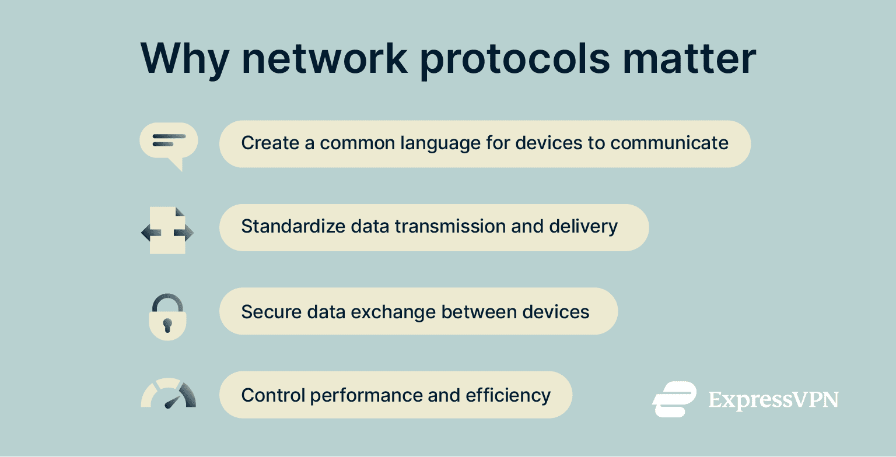
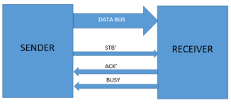
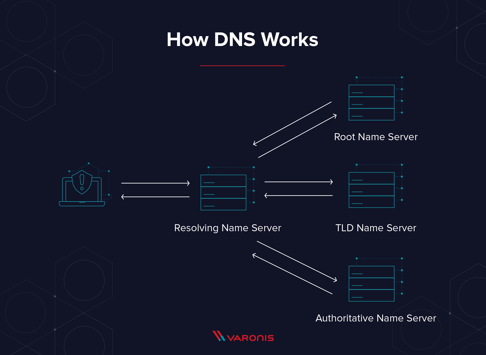
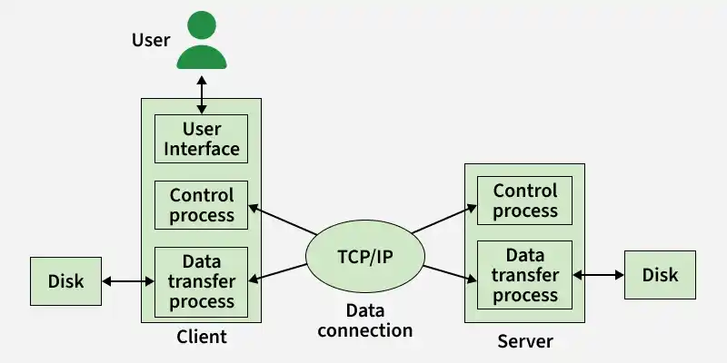
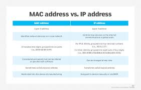

What are protocols?: In networking, a protocol is a set of rules for formatting and processing data. Network protocols are like a common language for computers. The computers within a network may use vastly different software and hardware; however, the use of protocols enables them to communicate with each other regardless.
What is handshaking?: Handshaking is a process in which two devices establish a connection and agree on the parameters for communication, such as data transfer rates and error-checking methods.
DNS – What is the role of DNS?: DNS (Domain Name System) is a hierarchical and distributed naming system for computers, services, or other resources connected to the Internet or a private network. Its primary role is to translate domain names into IP addresses, making it easier for users to access websites and other online resources without having to remember complex numerical IP addresses.
TCP/IP, FTP: TCP/IP (Transmission Control Protocol/Internet Protocol) is the foundational protocol suite for the Internet, enabling communication between devices. FTP (File Transfer Protocol) is a standard network protocol used for transferring files between a client and a server on a computer network.
HTML, HTTP: HTML (HyperText Markup Language) is the standard markup language for documents designed to be displayed in a web browser. HTTP (Hypertext Transfer Protocol) is the foundation of data communication for the World Wide Web, enabling the transfer of web pages and other resources between servers and clients.
IP address vs Mac Address: An IP address is a unique numerical identifier assigned to each device on a network for communication purposes, while a MAC address is a unique hardware identifier assigned to a network interface card (NIC) by the manufacturer.





